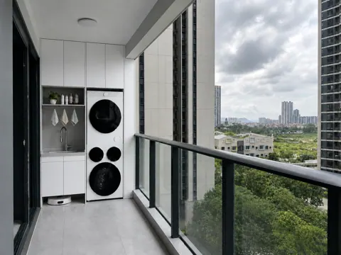
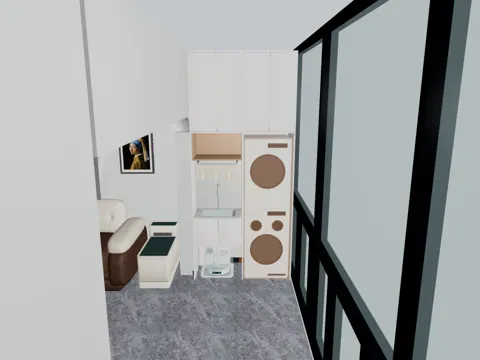
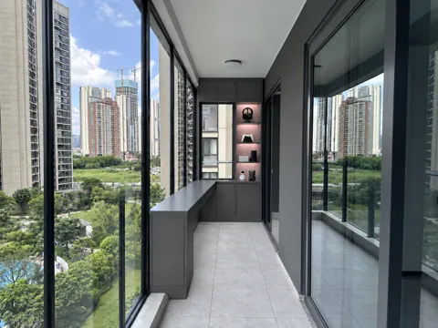
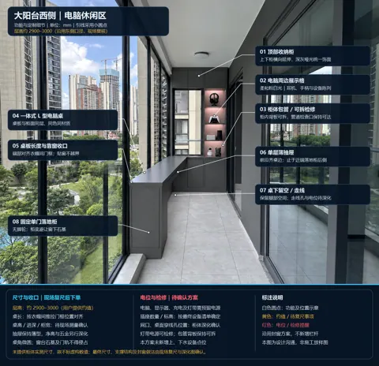
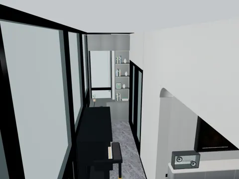
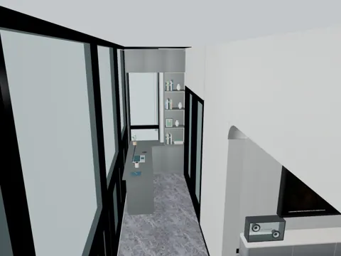
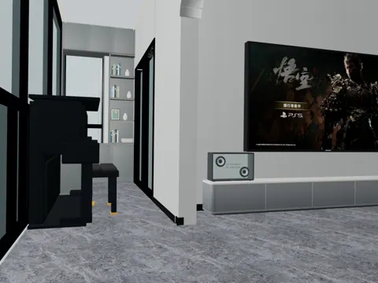
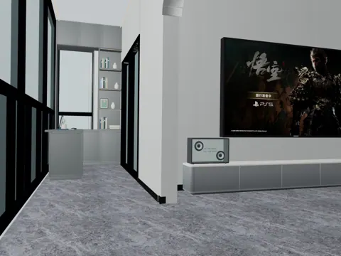

SPACE 03
03 大阳台
现状、需求与预期效果，放在一起讨论。
03 大阳台装修需求
所有尺寸均为参考；施工、定制、开孔和下单以现场实测、实物安装要求及确认图纸为准。列入配置不等于已经购买。
现场实拍

东侧阳台（客厅侧）

西侧阳台（衣帽间侧）
DESIGN INTENT
预期效果
3ds Max 渲染、AI 视觉参考分别标注；未确认来源的图片保留待标注状态。

大阳台东侧效果图

大阳台东侧标注图

大阳台东侧家政柜

大阳台西侧效果图（支撑柜可移除，做悬浮桌）

大阳台西侧标注图

大阳台西侧电脑观景桌

大阳台西侧电脑观景桌（隐藏钢琴）

大阳台西侧+客厅

大阳台西侧+客厅（隐藏钢琴）
功能与布局
- 东侧：洗衣家政、休闲茗茶、备用晾晒。
- 西侧：电脑桌及直播使用位，配展示收纳。
- 东西之间：立式钢琴，L 型落地帘软隔断（根据现场情况决定）。
硬装与定制
- 地面与墙面：东侧地面以不抬高、与客厅地砖找平通铺为目标，优先考虑保留原地面基础，具体铺装工艺现场确认，兼顾适老化及扫地机器人通行；东西分区墙面刷漆。
- 东侧家政柜：设置立式家政柜，容纳洗烘设备、脏衣篮、扫把、耗材等。顶部采用两组双开门收纳，配置木色日化开放格、隐藏抽拉抹布晾衣架及洗衣篮 / 洗衣液抽拉收纳。
- 东侧清洗与设备维护：清洗区配置台盆和抽拉龙头；机器人停靠区保留进出及整机拉出维护空间。下水管隔音包覆后设置可拆检修板，阀门、插座和上下水接口保持可达，不被柜体封死。
- 东侧参考尺寸：柜体总宽约 1500 mm、深约 600 mm、台面高约 900 mm；洗烘设备参考尺寸为宽 600 × 深 570 × 高 1922 mm，安装预留参考为宽 630 × 深 600 × 高 1942 mm。最终以设备安装说明及现场复尺为准，不直接按参考尺寸下单。
- 西侧桌柜与收纳：窗边设置 L 型电脑桌、顶部收纳柜、电脑周边展示格及单层薄抽屉，并做好窗边柜防水。桌板与柜面同层、同色同材质，采用深灰哑光饰面；桌柜是否一体定制待确认。优先采用悬浮桌，支撑结构待深化，落地支撑柜不作为必做项。
- 西侧收口与使用空间：桌板端部对齐衣帽间门框，贴窗不越界，避让窗台石及门轨，桌角做圆角。薄抽屉前沿齐桌边，延伸至靠近后侧落地柜处收止；若取消落地柜，抽屉范围随支撑方案调整。桌下保留腿部空间，桌面预留穿线孔。
- 西侧照明与检修：展示格采用暖色灯带，色温随材料样板确认；灯带驱动可检修，包管背板可拆，管道检修口保持可达。网络采用无线连接。
- 门窗与天花配合：保留西侧移门，地轨根据现场实际情况改为铜条，便于清洁，避免形成卫生死角。封窗按物业要求采用 5+20+5 双层中空玻璃，整体灰色、窗框与原窗框颜色一致。断桥铝、多固定扇少开启扇、尼龙隔热条、4SG 工艺、国产五金及三元乙丙密封条仍为选型意向，其中 4SG 不替代物业要求的玻璃组合，系统规格及分格由门窗单位深化确认；窗帘轨道、电机、帘盒与晾衣架同图定位。
封窗选型笔记
物业报装需铺砖图及封窗 CAD 图（尺寸、颜色、材料、安装位置），并提供铝材、玻璃质检报告及施工资质、高空作业证件和保险等资料，详见全屋物业报装配合。
保留选型关注点：
- 要求隔热隔音。
- 型材系列及壁厚与楼层条件匹配、隔热条材质、玻璃系统、五金与密封条、高空安装安排。
- 已有参考笔记中的“十楼以上 110 系列、壁厚 1.8 或 2.0；十楼以下 80/90 系列、壁厚 1.4”仅为待核实的选型信息，不作为本项目施工参数。
- 材料验收方法及施工责任约定与门窗单位确认。
家具与设备
“否”按成品选购；“待确认”不代表已决定定制。尺寸以现场实测及最终确认图纸为准。
商品图、规格图及购买链接均为选型参考，不限定购买渠道或最终款式。若有同款且性价比更高的选择、风格更合适的家具，或因现场尺寸、安装条件等客观原因需要调整，可提出替代方案，说明差异及更换原因，经业主确认同意后方可更换。
| 项目 | 数量 | 是否定制 | 参考尺寸 / 选型要求 | 商品图 / 规格参考 | 购买链接（参考） | 备注 |
|---|---|---|---|---|---|---|
| 东侧家政柜 | 1 套 | 是 | 含台盆，尺寸待现场测量 | 待选 / 暂无资料 | 待选 | 东侧一套 |
| 台盆及抽拉龙头 | 1 套 | 是 | 盆体及抽拉龙头选型待确认 | 示意 | 待选 | 配东侧家政柜，盆体、台面开孔及上下水检修共同确认 |
| 隐藏抽拉抹布晾衣架 | 1 组 | 是 | 规格按柜体核对 | 示意 | 待选 | 安装于清洗区上方，不与东西侧两套电动晾衣架重复计数 |
| 家政工具: 升降拉篮、折叠洗衣篓 | 若干 | 否 | 升降拉篮图示下降行程 700 mm，上 / 下篮深 280 / 195 mm；脏衣篮规格按柜体确认 | 洗衣篓-实拍；升降拉篮实拍、升降拉篮规格 | 淘宝-升降拉篮；淘宝-洗衣篓 | 按定制柜体配置并核对安装与下降空间 |
| 洗烘套装 | 1 套 | 否 | 叠放参考宽 600 × 深 570 × 高 1922 mm；图示整体深度 595 mm、开门深度 1087 mm；建议预留宽 630 × 深 600 × 高 1942 mm（含突出部分深 625 mm） | 实拍、规格 | 淘宝 | 立式叠放一套，是否需要两整套待确认；品牌、型号按实物确认；洗衣机与烘干机各一条排水管，烘干机管径较小；安装尺寸按最终设备核对 |
| 自动上下水扫地机器人及基站 | 1 套 | 否 | 大疆 DJI ROMO P2 自动上下水参考款；基站长 425 × 宽 453 × 高 440 mm，机器人高 98 mm；图示功率 1100 W | 实拍、规格 | 大疆商城 | 考虑购买明年的新款，接口及安装空间按最终型号确认 |
| 阳台茶桌 | 1 张 | 否 | 尺寸与款式待选 | 待选 / 暂无资料 | 先不买 | — |
| 西侧转角电脑桌/柜 | 1 套 | 是 | 尺寸待现场测量；期望悬浮式 | 示意 | 待选 | 西侧一套；电脑桌延伸板是否需要柜体支撑待定 |
| 台式电脑 | 1 套 | 否 | 主机、显示器及直播补光选型待定，设备选成品 | 待选 / 暂无资料 | 先不买 | 布置在西侧 |
| 立式钢琴 | 1 台 | 否 | 自有立式钢琴；参考宽 1520 × 深 620 × 高 1230 mm（按图示），图示型号 XU-23FA | 示意图、一般规格 | 自有设备 | 规格图侧视标深 620 mm，参数栏标深 610 mm，实际尺寸以自有钢琴测量为准；声学钢琴不默认计常电，电钢琴或除湿设备另核 |
| 备用晾衣架 | 2 套 | 否 | 参考型号 H21S-ZL，白色、带灯；主机长 978 × 宽 320 mm，整体宽 465 mm、厚 95 mm；杆长 1207～2007 mm；图示开孔 1400 × 560 × 120 mm，动态承重 35 kg | 实拍、规格 | 淘宝 | 东西侧各一套，平时隐藏仅用于照明、多衣服时备用；品牌及最终选型待确认，开孔按所选安装说明核对 |
| L 型窗帘 | 2 套 | 否 | L 型落地窗帘，也可选分体式，满足“只隔断不隔景” | 示意、示意 | 待确认 | 不选百叶帘。东西侧各一套；东侧用于东西区阳台软隔断 |
水电
用电设备
-
东西侧各一套带灯电动晾衣架，当前兼作基础照明，每套只计一份供电；若照明设计另增灯具，再补独立供电。电动窗帘和西侧展示柜暖色灯带另列。
-
隔断帘是否电动尚未确定，不与窗帘电机重复计算。
-
现状无电位，需结合现场水电图补充。
-
洗衣机、烘干机及机器人基站分别供电，西侧电脑位需电源，网络采用无线连接。
-
洗烘套、台盆和扫地机器人进排水、五通及止回做法由安装方核对。
插座、用电设备和开关统一列在下表；同一设备的供电只计一次。用电设备采用插座还是直接接线随最终选型确定，安装高度写在位置要求中；开关按面板位置计数，不按按键数计。数量包含暂定项，现有可复用位置现场核对。
| 类别 | 设备 / 用途 | 数量 | 位置 / 要求 | 状态 |
|---|---|---|---|---|
| 插座 | 东侧 · 洗衣机 | 1 个 | 洗烘暂按一套，数量待确认 | 暂按配置 |
| 插座 | 东侧 · 烘干机 | 1 个 | 与洗衣机分别供电 | 暂按配置 |
| 插座 | 东侧 · 扫地机器人基站 | 1 个 | 按无线连接考虑 | 配置 |
| 插座 | 西侧 · 台式电脑主机 | 1 个 | 按设备清单的台式电脑预留，位置随桌柜布局确认 | 预留，型号待选 |
| 插座 | 西侧 · 显示器 | 1 个 | 独立显示器是否配置待确认 | 暂定 |
| 插座 | 西侧 · 直播补光 | 1 个 | 型号待选 | 暂定 |
| 插座 | 西侧 · 充电 | 1 个 | 手机等设备充电 | 暂定 |
| 用电设备 | 大阳台东侧 · 电动窗帘 | 1 套 | 按东侧一个电动帘开口；确认轨道长度、驱动侧及晾衣架位置 | 暂定 |
| 用电设备 | 大阳台东侧 · 电动晾衣架及自带照明 | 1 套 | 东侧晾衣架与自带照明共用供电；不足时再补独立灯组 | 配置，接口待核 |
| 用电设备 | 大阳台西侧 · 电动窗帘 | 1 套 | 暂按西侧一个电动帘开口；轨道及电机侧与晾衣架共同定位 | 暂定 |
| 用电设备 | 大阳台西侧 · 电动晾衣架及自带照明 | 1 套 | 与桌面、展示柜及帘轨避让；自带照明不另计电源 | 配置，接口待核 |
| 用电设备 | 西阳台展示柜照明 | 1 组 | 按一组暂列，结合实际分柜和功率拆分 | 暂定 |
| 开关 | 大阳台 · 照明开关 | 2 处 | 两处具体位置待定位 | 数量已由业主确认 |
汇总：插座 7 个，另需供电的设备 5 项，照明开关 2 处。 用电设备后续即使采用插座供电，也不再重复增加同一项需求。
西侧桌面沿使用段约每米留一处插座位置，长度待现场复尺；主机、显示器、补光及充电所需插口已在上表计入，不再叠加墙面位置数量。声学钢琴、手动拉篮和抽拉抹布架不计供电。
用水设备
按设备端需求记录，上水按用水设备 / 用水位计，下水按排水接入计；冷热水同时需要时仍为一个用水位，但施工须分别记录冷、热水接口。数量包含现有可复用接口，不直接等于新增管口；共用支路不省略设备需求。
| 设备 / 用途 | 上水需求 | 下水需求 | 位置 / 说明 |
|---|---|---|---|
| 洗衣机 | 1 处；进水类型按型号 | 1 处 | 按一套洗烘配置，接口按实物确认 |
| 烘干机 | 待型号确认，暂不计数量 | 1 处 | 小口径排水管单独计入；如有进水需求再补 |
| 台盆及抽拉龙头 | 1 处；冷 / 热水配置待确认 | 1 处 | 盆体、龙头及柜内接口共同定位 |
| 自动上下水扫地机器人基站 | 1 处；按基站要求 | 1 处 | 阀门及管线保留检修空间 |
当前计入：上水 3 处，下水 4 处，含表内暂定项。 待型号确认的附加接口暂未计入，不代表不需要。地漏、雨水、空调冷凝水及其他附加排水另行现场盘点；管径、阀门和支路按最终设备与现场条件确定。
待确认事项
| 区域 / 专项 | 待确认内容 | 对设计及报价的影响 |
|---|---|---|
| 窗帘轨道、天花 | 落地帘是否电动、天花是否需要隐藏带灯晾衣 | 轨道、天花和电源 |